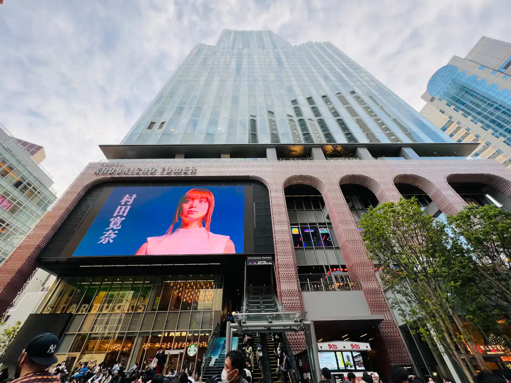

Attractions :
Japan boasts a diverse array of attractions that captivate tourists from around the world.
Its iconic mountains offer breathtaking views and climbing opportunities, while historic temples provide a glimpse into the country's rich cultural heritage. The bustling capital city, with its blend of ultramodern skyscrapers and traditional neighborhoods, offers endless exploration.
Poignant historical sites serve as reminders of the past. Other highlights include friendly wildlife, stunning natural beauty, tropical beaches, and scenic hot springs.
Each destination showcases Japan's unique blend of tradition and innovation.

 |
 |
|||
Shibuya Crossing Shibuya Crossing is Tokyo's iconic pedestrian scramble, a vibrant symbol of the city's bustling urban life and modernity. It offers visitors a thrilling experience of synchronized pedestrian movement amid towering skyscrapers and neon lights, making it a must-see attraction for capturing Tokyo's dynamic energy. |
Shinjuku Gyoen National Garden Mandarin Oriental, Tokyo is a five-star luxury hotel located in the prestigious Nihonbashi district, offering breathtaking views of the Tokyo skyline, including Tokyo Skytree and the Imperial Palace. The hotel seamlessly blends contemporary elegance with traditional Japanese aesthetics, featuring spacious and meticulously designed rooms and suites. Guests can indulge in world-class dining options, such as the Michelin-starred French restaurant Signature and the unique Tapas Molecular Bar. The award-winning spa offers a serene escape with holistic treatments, while exclusive cultural experiences like traditional tea ceremonies enhance the stay. Committed to sustainability, Mandarin Oriental, Tokyo ensures a luxurious and eco-friendly experience, making it an exceptional choice for discerning travelers. |
TOkinawa Prince Hotel Ocean View Ginowan is a luxurious beachfront hotel located in Ginowan, Okinawa. Offering stunning views of the East China Sea, the hotel features modern design and spacious rooms with private balconies. Guests can enjoy a range of amenities, including multiple dining options, an outdoor swimming pool, a spa, and a fitness center. The hotel is conveniently situated near local attractions such as the Ginowan Marina and Tropical Beach, providing easy access to recreational activities. Committed to sustainability, the hotel ensures an eco-friendly stay, making it an ideal destination for travelers seeking both relaxation and adventure in a beautiful setting. |
Kyoto
 |
 | |||
Entire home in Kanazawa, Japan Family-friendly private guest house "Zawazawa" in Kanazawa is ideal for families or groups of up to 8 people. Located just 700 meters from Kanazawa Station, it offers convenient access to local attractions like Kenrokuen and Higashi Chaya Street. The house features two guest rooms—a Japanese-style room with futons and a Western-style room with single beds—all with high-resilience mattresses for comfort. Amenities include a modern bathroom, high-speed Wi-Fi, a 50-inch internet TV, a large refrigerator, and a washing machine and dryer, making it perfect for long stays. Family-friendly equipment such as children’s chairs and futons ensures a comfortable stay for those with small children. With free parking for two cars, the house is a convenient and cozy base for exploring Kanazawa. |
Entire rental unit in Shinjuku City, Japan Three rooms and one living room Located in the center of Tokyo, Shinjuku is one of the main bustling districts of Tokyo and the most famous business district in Tokyo and throughout Japan.Shinjuku station is one of the most important transportation options in downtown Tokyo (the center of Shinjuku is on the east side of Shinjuku station). In Shinjuku, cinemas, appliance stores, and large department stores can be said to be everywhere, and there are countless special foods.It can satisfy all your needs.The following is an apartment located near the east exit of Shinjuku Station, a bustling area in the center of Shinjuku. | Entire home in Shinagawa City, Japan This traditional two-storey house in Shinagawa, accommodating up to 12 people, combines the charm of Japanese architecture with modern amenities. Located near Shinagawa Station, it offers unparalleled convenience for exploring Tokyo and beyond. The house features a serene Japanese garden with a fountain, two double-sized beds, and eight futons. Guests can enjoy modern facilities, including a fully equipped kitchen, automatic washing machine, air conditioning, and more. The entire house, except for one locked room, is available for guests, making it an ideal retreat for families or large groups seeking both comfort and an authentic Japanese experience. |
Osaka
Shinjuku Kuyakusho-mae Capsule Hotel Shinjuku Kuyakusho-mae Capsule Hotel offers a unique and budget-friendly lodging experience in the heart of Tokyo's vibrant Shinjuku district. Located steps away from Shinjuku Station, it provides easy access to the city's major attractions, shopping areas, and entertainment venues. The hotel features modern, space-efficient capsules equipped with comfortable mattresses, personal lighting, power outlets, and privacy curtains. Guests can enjoy well-maintained communal bathrooms, spacious lounge areas with free Wi-Fi, and secure lockers. Additional amenities include a 24-hour front desk, laundry facilities, and on-site spa services. Ideal for budget-conscious travelers, this capsule hotel combines affordability, convenience, and comfort in one of Tokyo's most dynamic neighborhoods. |
Juyoh Hotel, just 650 meters from Minami-Senju Subway Station, offers free WiFi, air conditioning, and heating in all guest rooms. Rooms are either Japanese-style with futon bedding or Western-style with beds. Shared showers and toilets are provided, and each room includes a refrigerator, Japanese-style yukata robes, and towels. Guests can use the coin-operated laundrette, dryer, and shared kitchen with a microwave. For relaxation, there's a Japanese-style private bath available on the 10th floor for an additional fee. The hotel is an 8-minute bus ride or 20-minute walk from Senso-ji Temple and Kaminarimon (Thunder Gate). Minami-Senju Subway Station offers direct access to Tsukiji, Ginza, and Roppongi, with Ueno Station reachable in 6 minutes and Akihabara Station in 8 minutes. |
Hotel Empire Shinjuku, centrally nestled in Tokyo's bustling Shinjuku district, offers a modern and convenient accommodation experience. Its prime location provides easy access to Shinjuku Station, ensuring guests can explore Tokyo's vibrant attractions, shopping centers, and dining options with ease. The hotel features comfortable rooms equipped with essential amenities such as free Wi-Fi and air conditioning, catering to the needs of both leisure and business travelers. With its blend of affordability and accessibility, Hotel Empire Shinjuku is an ideal choice for visitors seeking a comfortable stay in the heart of Tokyo's dynamic urban landscape. |
Honourable Mentions
Shinjuku Kuyakusho-mae Capsule Hotel Shinjuku Kuyakusho-mae Capsule Hotel offers a unique and budget-friendly lodging experience in the heart of Tokyo's vibrant Shinjuku district. Located steps away from Shinjuku Station, it provides easy access to the city's major attractions, shopping areas, and entertainment venues. The hotel features modern, space-efficient capsules equipped with comfortable mattresses, personal lighting, power outlets, and privacy curtains. Guests can enjoy well-maintained communal bathrooms, spacious lounge areas with free Wi-Fi, and secure lockers. Additional amenities include a 24-hour front desk, laundry facilities, and on-site spa services. Ideal for budget-conscious travelers, this capsule hotel combines affordability, convenience, and comfort in one of Tokyo's most dynamic neighborhoods. |
Juyoh Hotel, just 650 meters from Minami-Senju Subway Station, offers free WiFi, air conditioning, and heating in all guest rooms. Rooms are either Japanese-style with futon bedding or Western-style with beds. Shared showers and toilets are provided, and each room includes a refrigerator, Japanese-style yukata robes, and towels. Guests can use the coin-operated laundrette, dryer, and shared kitchen with a microwave. For relaxation, there's a Japanese-style private bath available on the 10th floor for an additional fee. The hotel is an 8-minute bus ride or 20-minute walk from Senso-ji Temple and Kaminarimon (Thunder Gate). Minami-Senju Subway Station offers direct access to Tsukiji, Ginza, and Roppongi, with Ueno Station reachable in 6 minutes and Akihabara Station in 8 minutes. |
Hotel Empire Shinjuku, centrally nestled in Tokyo's bustling Shinjuku district, offers a modern and convenient accommodation experience. Its prime location provides easy access to Shinjuku Station, ensuring guests can explore Tokyo's vibrant attractions, shopping centers, and dining options with ease. The hotel features comfortable rooms equipped with essential amenities such as free Wi-Fi and air conditioning, catering to the needs of both leisure and business travelers. With its blend of affordability and accessibility, Hotel Empire Shinjuku is an ideal choice for visitors seeking a comfortable stay in the heart of Tokyo's dynamic urban landscape. |